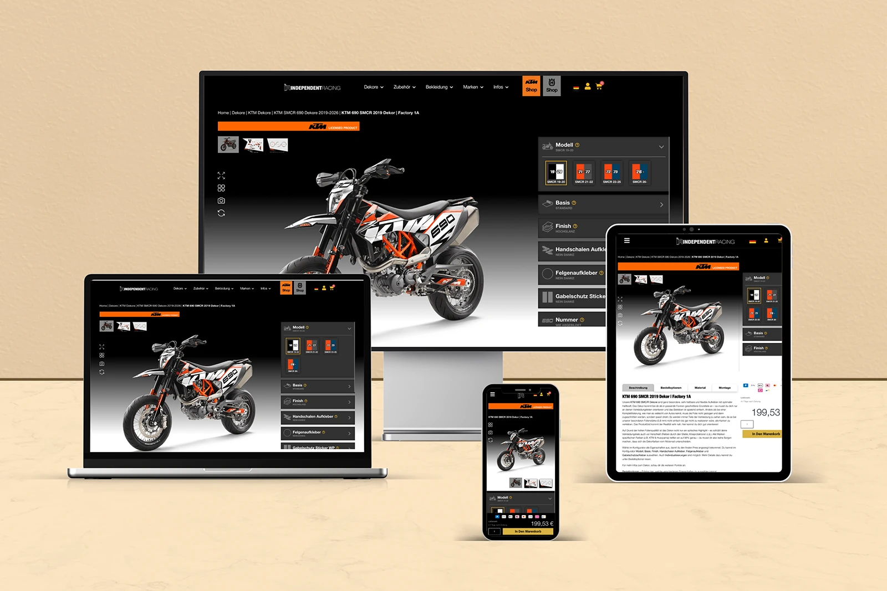
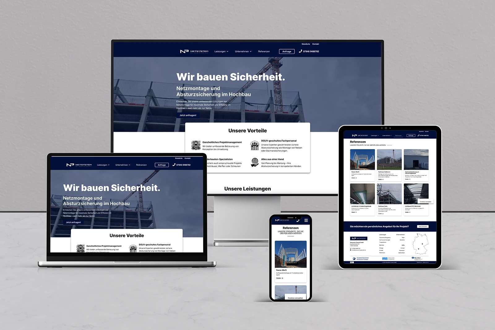
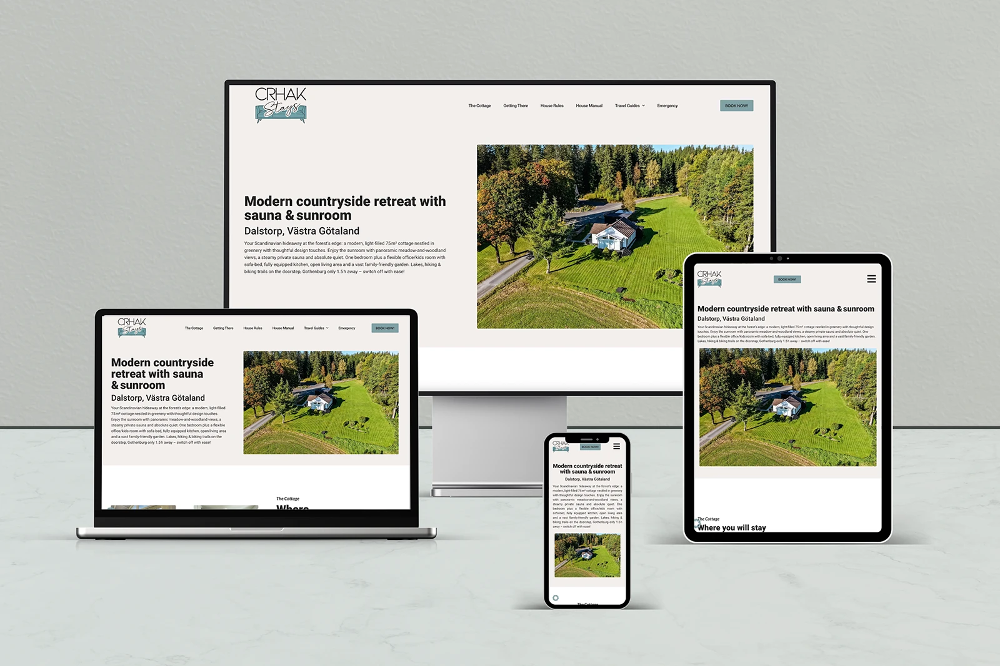
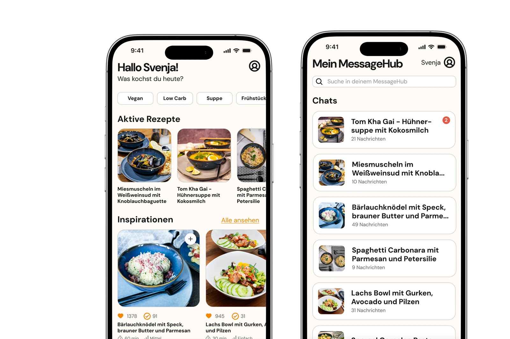
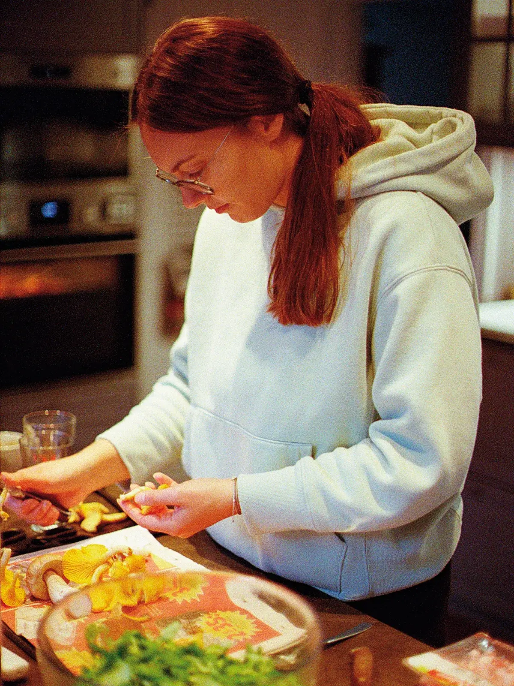
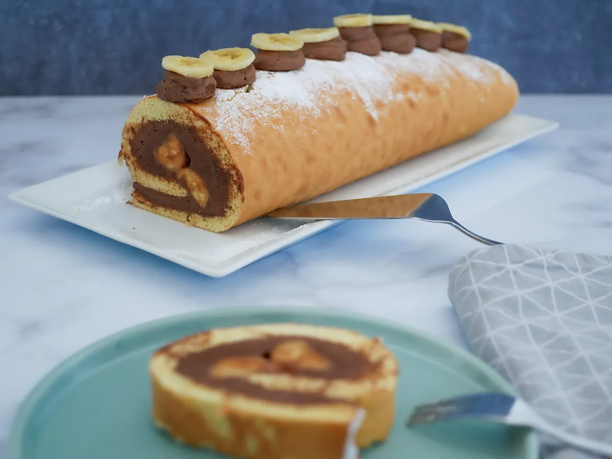
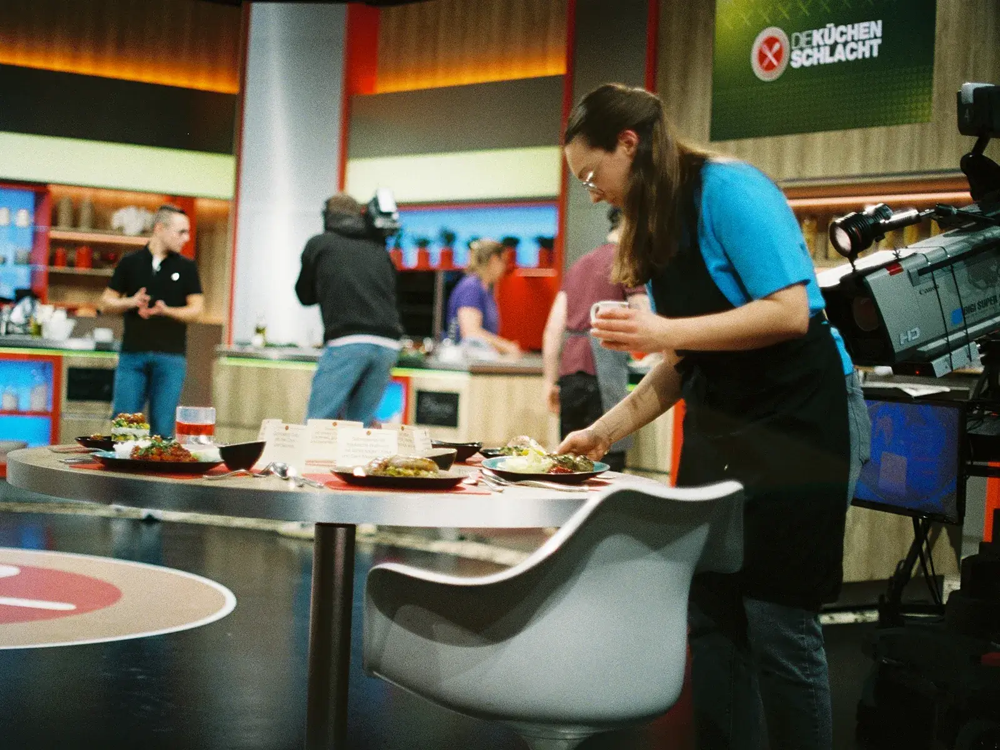

Independent Racing
E-Commerce-Shop für Motorraddekore mit WordPress & WooCommerce
Medieninformatikerin, Webentwicklerin & leidenschaftliche Hobbyköchin
Spezialisiert auf durchdachte digitale Erlebnisse, Webdesign, UI/UX & E-Commerce – gestaltet mit Struktur und Bauchgefühl
Meine Story entdecken Karriere & Skills ansehenKarriere & Werkzeuge
Vom Klassenzimmer als Realschullehrerin und Digitalbeauftragte über mein Medieninformatik-Studium bis hin zur E-Commerce-Entwicklung bringe ich vielseitige Erfahrung mit.
Projekte & Studienarbeiten
Von maßgeschneiderten Online-Shops über B2B-Webauftritte bis hin zu akademischen UI/UX-Konzepten
Alle Projekte anschauen →
E-Commerce-Shop für Motorraddekore mit WordPress & WooCommerce

B2B-Corporate-Webauftritt für Netsystem Petzold GmbH mit WordPress

Skandinavisches Webdesign für eine Ferienhaus-Vermietung in Schweden

Interaktive Web-Anwendungen und UI/UX-Konzepte
Meine Story
Erfahre mehr über meine persönliche Reise – vom Unterrichten an einer Schule in Deutschland über den Schritt ins Fernstudium der Medieninformatik bis hin zu meinem neuen Lebensmittelpunkt in Schweden.
Meine ganze Story lesenFoodblog & TV-Auftritt
Kochen ist für mich kreativer Ausgleich, Leidenschaft und Erholung. Auf meinem Foodblog „Bauchgefühl Rezepte“ teile ich meine liebsten Gerichte, bei denen ich vor allem meinem Bauchgefühl vertraue. Ein besonderes Highlight war zudem mein Abenteuer bei der ZDF Küchenschlacht.
Kulinarik entdecken →

Rezeptideen von schwäbischer Heimatküche bis hin zu internationalen Spezialitäten
Mehr zum Foodblog →
Teilnahme an der beliebten Kochshow im ZDF – ein unvergessliches Erlebnis!
Mehr zur Küchenschlacht →Kontakt
Du möchtest dich vernetzen, hast Fragen zu meinen Webdesign-Projekten oder suchst den Austausch? Schreib mir gerne – ich freue mich über jede Nachricht!